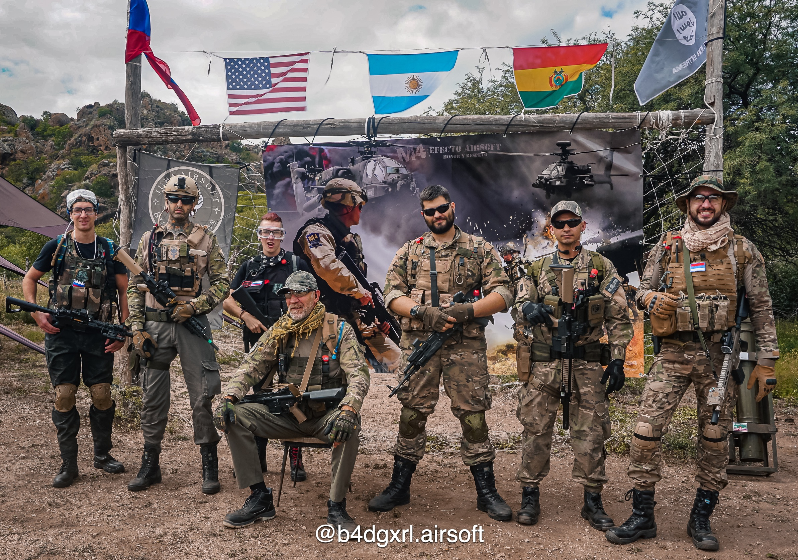
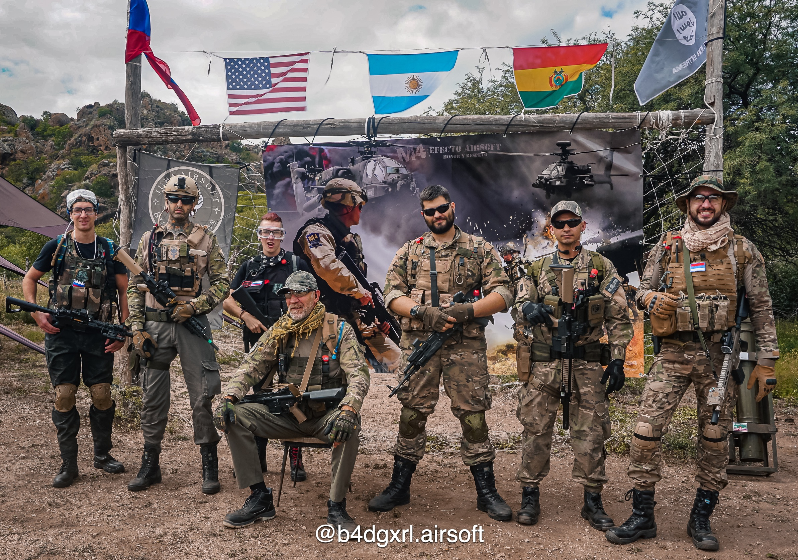

Special Airsoft Warfare
 

Que es el Airsoft?
Airsoft, el juego de estrategia con armas y uniformes que recrea escenarios de guerra reales y que arrasa en todo el mundo.
El Airsoft es un juego y deporte de estrategia basado en la simulación militar. Se trata de un juego de guerra similar al paintball, se difencia del Paintball en que los proyectiles son mucho más pequeños, no manchan de pintura y por supuesto no deja moretones y hematomas que dejan las bolas de pintura cuando impactan en el cuerpo. Esta actividad se basa en la simulación de combates usando réplicas de armas reales (las cuales disparan pequeñas bolas de plástico de 6 u 8 mm) en escenarios de juego similares a los de una guerra real, con equipamiento paramilitar, suelen estar acondicionados con elementos como muros, búnkers, trincheras, edificios, torres y otras edificaciones similares para ofrecer un realismo que se asemeje a los entornos bélicos reales. El término "Airsoft" proviene del inglés; se traduciría como "aire suave". Esto hace referencia a la forma y el tipo de munición que dispara. Las réplicas usadas en el Airsoft suelen tener la apariencia de armas de fuego reales, excepto que estas réplicas están diseñadas para disparar proyectiles de PVC de bajo peso, pero con una gran precisión. Las réplicas de Airsoft están clasificadas conforme a su principio de operación que puede ser: mediante muelle (spring), eléctrico (AEG), o mediante gas. Las réplicas eléctricas automáticas o AEG (del inglés Automatic Electric Guns) son ahora las más empleadas en el Airsoft y funcionan con baterías recargables de alta capacidad que mueven los engranajes que desplazan el aire para propulsar las bolas.
Roles de los Jugadores